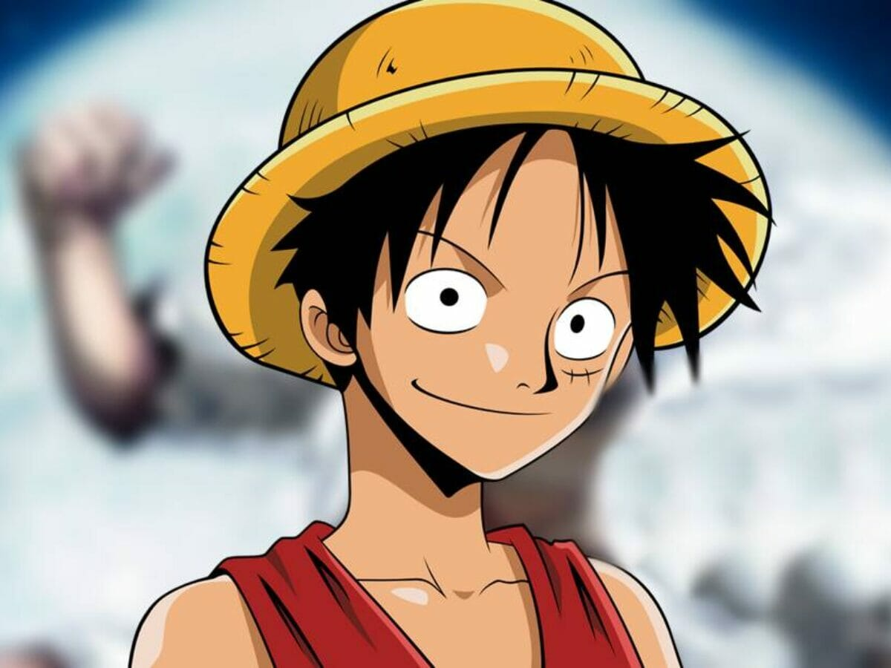
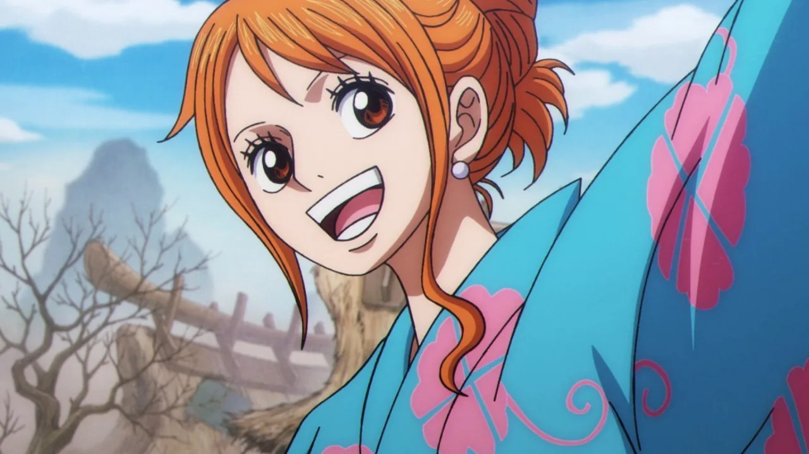
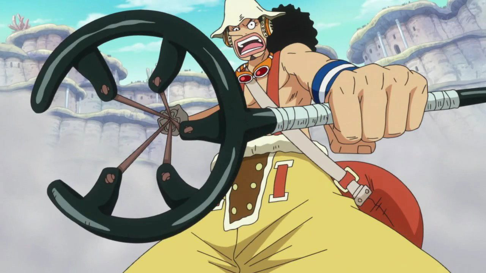
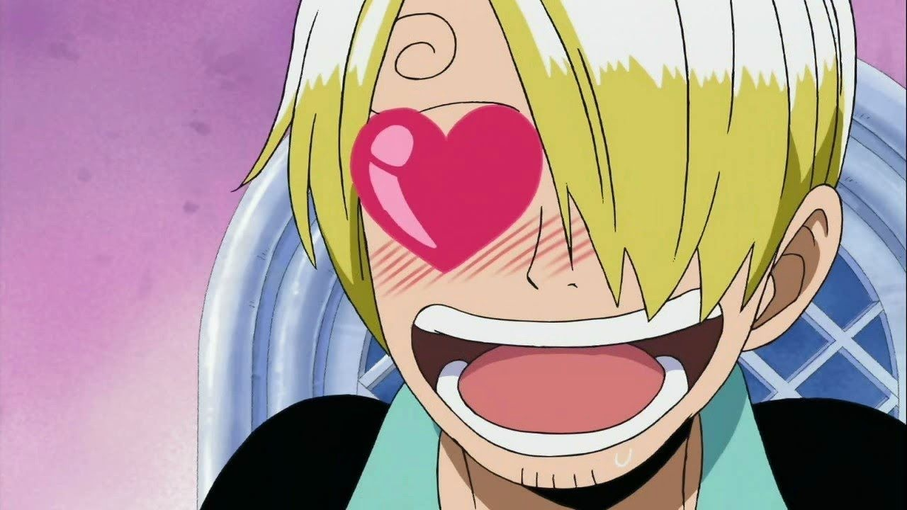
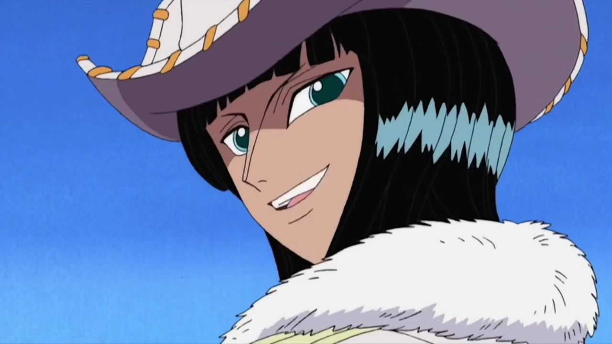

Quem são os Mugiwaras?
Vindos de diversos mares do mundo, cada integrante do bando tem um sonho único e uma lealdade ao capitão Luffy. Eles navegam a bordo do navio Going Merry/Thousand Sunny enfrentando o Governo Mundial (Ennies Lobby,um dos melhores arcos) e outros piratas.
Ordem do bando !!
Abaixo está a ordem cronológica em que os primeiros membros se juntaram ao bando:
-
Monkey D. Luffy - O Capitão
Sonha em se tornar o Rei dos Piratas e encontrar o One Piece.

-
Roronoa Zoro - O Espadachim
O primeiro a se juntar. Seu objetivo é se tornar o espadachim mais forte do mundo.

-
Nami - A Navegadora
Ela quem guia o navio. Seu sonho é desenhar o mapa-múndi completo.
-
Usopp - O Atirador
O mestre dos disfarces e mentiras que busca se tornar um bravo guerreiro do mar.

-
Sanji - O Cozinheiro do bando
Curiosidade: Ele na maioria das vezes ataca com chutes porque as mãos são importantes pra cozinhar. O sonho dele é encontrar o lendário All Blue.

-
Tony Tony Chopper - O Médico
A rena de nariz azul que comeu a Hito Hito no Mi. Uma rena que pode agir como humano. Quer curar todas as doenças do mundo.

-
Nico Robin - A Arqueóloga
A única sobrevivente de Ohara capaz de ler os Poneglyphs para descobrir a História Perdida.
